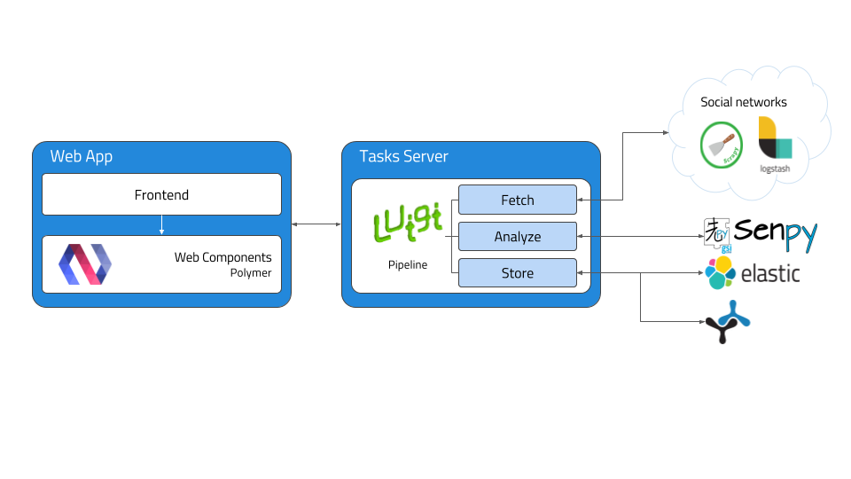
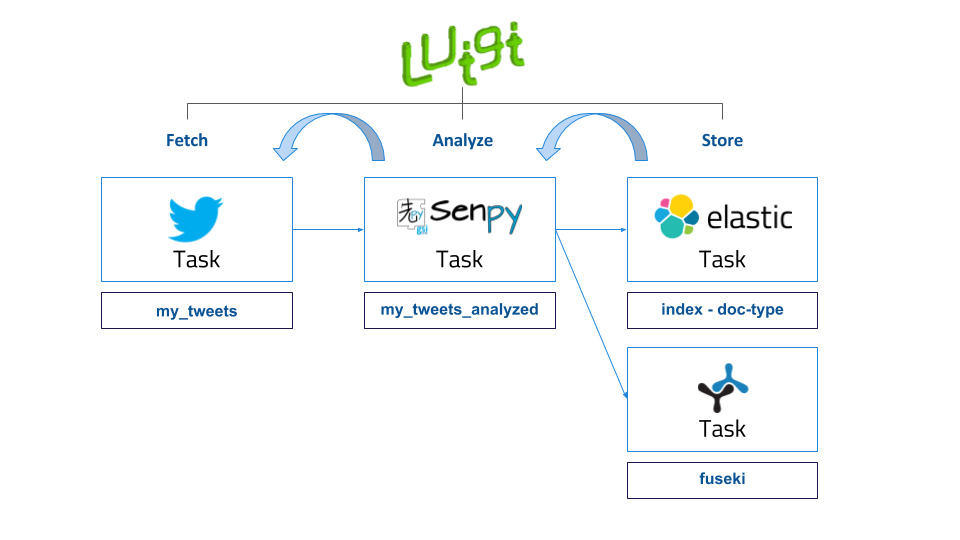
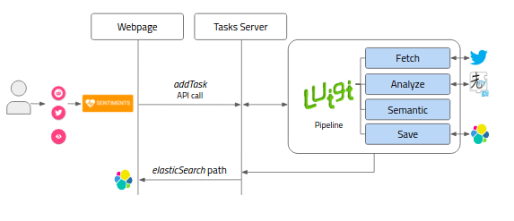

Architecture¶
Overview¶
GSI Crawler environment can be defined from a high level point of view as follows:
- Data Ingestion: this is the core function of GSI Crawler, consisting on extracting data according to the petitions sent to it. It works thanks to the use of web crawlers, which will be explained in more detail in the Modules section.
- Semantic Representation: before its storage, data will be enriched following semantic paradigms in order to allow a more powerful analysis later.
- Data Storage: after data acquisition and enrichment, the storage process is carried out. At this moment, both ElasticSearch and Fuseki are available for fulfulling this task.
Modules¶
The following figure describes the architecture from a modular point of view, being each of the modules described below.
Tasks Server¶
The tasks server is responsible of managing the incoming workflow and setting up a valid pipeline to obtain, analyze, organize and save the results in Fuseki or ElasticSearch to be displayed in the client application. Luigi framework is used as an orchestator to build a sequence of tasks in order to facilitate the analysis process.
This tasks server is activated periodically by an administrator of processes called cron, whose aim is to obtain more information everyday. That way, any user can visualize data any time with the certainty that there will be stored data in the system.
All the pipelines have the same structure, as represented in the figure below.
As is represented above, pipelines architecture is divided into three main steps, Fetch, Analyze, Store:
- Fetch refers to the process of obtaining tweets, comments or any content which is desired to be analyzed, from the provided URL. Most of the times, this task involves webpage parsing, recognizing valuable information contained inside html tags and building a new JSON file with the selected data. This process is commonly known as scraping a website. In order to facilitate this filtering process,there exist multiple extensions or libraries that offer a well-formed structure to carry out this task in a more comfortable way. Inside the Tasks Server, we have imported the Scrapy library in order to agilize the data mining process. Scrapy is an open source and collaborative framework for extracting the data from websites, in a fast, simple, yet extensible way. It is based on sub classes named spiders, which contain the required methods to extract the information. Apart from the use of the Scrapy library, several APIs have also been used for retrieving data. The GSI Crawler application has three available scrapers, one for each Twitter and Reddit platform, and another one which includes spiders for different news sources. So to conclude, this task focuses on extracting the valuable data and generates a JSON which can be analyzed by the following task in the pipeline.
- Analyze task is responsible of taking the input JSON file generated by the previous task, parsing it and analyzing each text strign using Senpy remote server for it. Senpy service is based on HTTP calls, obtaining an analyzed result for the text attached in the request. Once the task has collected the analysis result, it generates another JSON containing the original sentence and its analysis result.
- Store process consists on storing the JSON generated previously which contains the analysis result inside ElasticSearch instance or Fuseki. ElasticSearch is a distributed, RESTful search and analytics engine capable of solving a growing number of use cases. As the heart of the Elastic Stack, it centrally stores the data so it is possible to discover the expected and uncover the unexpected. To carry out the saving process, it’s necessary to provide two arguments, the index, which represents the elastic index where the information will be saved, and the doc type, which allows to categorize information that belongs to the same index. It exists a third parameter which is the id of the query, but it is automatically generated by default.
To better understand these concepts, we are going to give a clear example that shows how the pipeline processes work internally. Imagine that the user requests a sentiment analysis for a certain Tweet. One ElasticSearch parameters approach that would fit could be, twitter as the ElasticSearch index, sentiment as the doc type because there could exist an emotion within the same platform, and lastly the id that could be the datetime when the task request was triggered.
Once the Luigi orchestator has been explained, we will conclude this section detailing how the server behaves when it receives a user request, and what parameters are mandatory to run the operation. The workflow is shown in diagram below:
Web App - Polymer Web Components¶
GSI Crawler framework uses a webpage based on Polymer web components to interact with all the functionalities offered by the tool. These Polymer Web Components are simply independent submodules that can be grouped each other to build the general dashboard interface. For more information please visit Sefarad documentation on web components.

{kind=link}